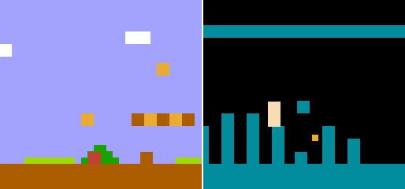
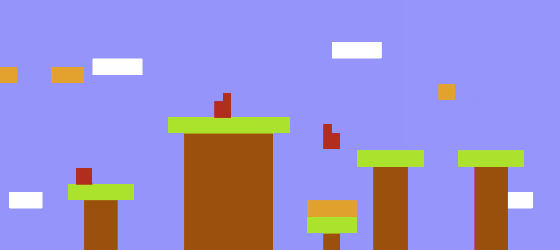
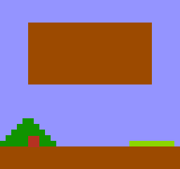

Inspired by the work of Calen Henry, I set out to do my first NES ROM hack: a playable version of Minimal Mario. The end result is awesome, and playable.
How to Get the Game

First, you need to make a dump of your Super Mario Bros. cart. The cart I had ended up being detected as "Super Mario Bros. (JU) (PRG0) [!]", in the GoodROM database. You'll need to make yourself a dump of this same cart. I recommend using CopyNES from Kevin Horton. Unfortunately, he's stopping making them for others. You can buy a newer USB version of the CopyNES from Retrozone. Refer to the CopyNES software documentation on how to make a clean dump of the game.
The next step is to apply my IPS patch to your freshly dumped game. To do this, you'll need an IPS patcher; pick your favorite one. (Hint: For Windows XP, I like Lunar IPS. For Mac OS X, I like UIPS. For Linux, I like to use whatever the default package manager provides.) Apply the patch and you are ready to play.
How to Play

When you first start the game, you'll see this screen. To start a single player game, press start. To start a two player game, press select, then start. This is exactly the same as the normal Super Mario Bros. game.
Watch a Playthrough
A fellow named Billy, who found that the springboard wasn't very minimal in my original patch, has uploaded a video of a play-through to YouTube. Be sure to watch it in all its glory in super low resolution 240p!